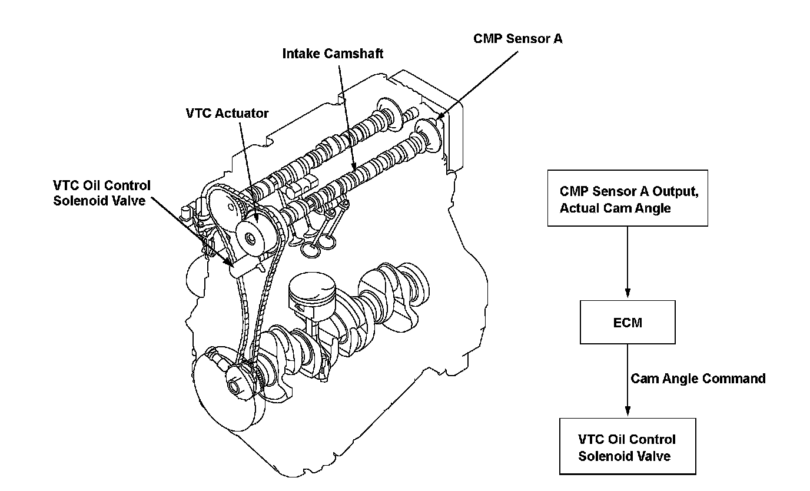
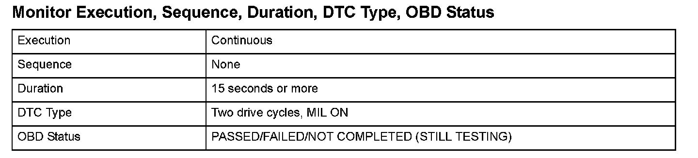
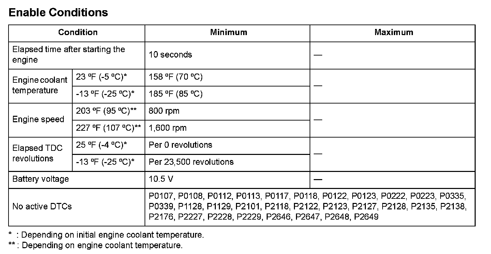

Advanced Diagnostics
DTC P0011: Variable Valve Timing Control (VTC) System Malfunction (Engine Type: K20Z3)
General Description
The variable valve timing control (VTC) system controls the timing of the intake camshaft. It uses hydraulic pressure to operate the VTC actuator so the valve timing is optimized depending on driving conditions. The engine control module (ECM) monitors the phase control command and the actual timing of the camshaft by using camshaft position (CMP) sensor A. If the phase difference between them is excessive for a certain time period, a malfunction is detected and a DTC is stored.

Monitor Execution, Sequence, Duration, DTC Type, OBD Status

Enable Conditions
Malfunction Threshold
The timing difference between the timing control command and the actual timing of the camshaft is 20.0° or more for at least 15 seconds.
Confirmation Procedure with the HDS
Do the VTC TEST in the INSPECTION MENU of the HDS. Driving Pattern
Driving Pattern
1. Start the engine. Hold the engine speed at 3,000 rpm without load (in neutral) until the radiator fan comes on.
2. Drive the vehicle at a steady speed between 25 - 75 mph (40 - 120 km/h) for at least 15 seconds.
- Drive the vehicle in this manner only if the traffic regulations and ambient conditions allow.
Diagnosis Details
Conditions for illuminating the MIL When a malfunction is detected during the first drive cycle, a Temporary DTC is stored in the ECM memory. If the malfunction recurs during the next (second) drive cycle, the MIL comes on and the DTC and the freeze frame data are stored.
Conditions for clearing the MIL
The MIL will be cleared if the malfunction does not recur during three consecutive trips in which the diagnostic runs.
The MIL, the DTC, the Temporary DTC, and the freeze frame data can be cleared by using the scan tool Clear command or by disconnecting the battery.